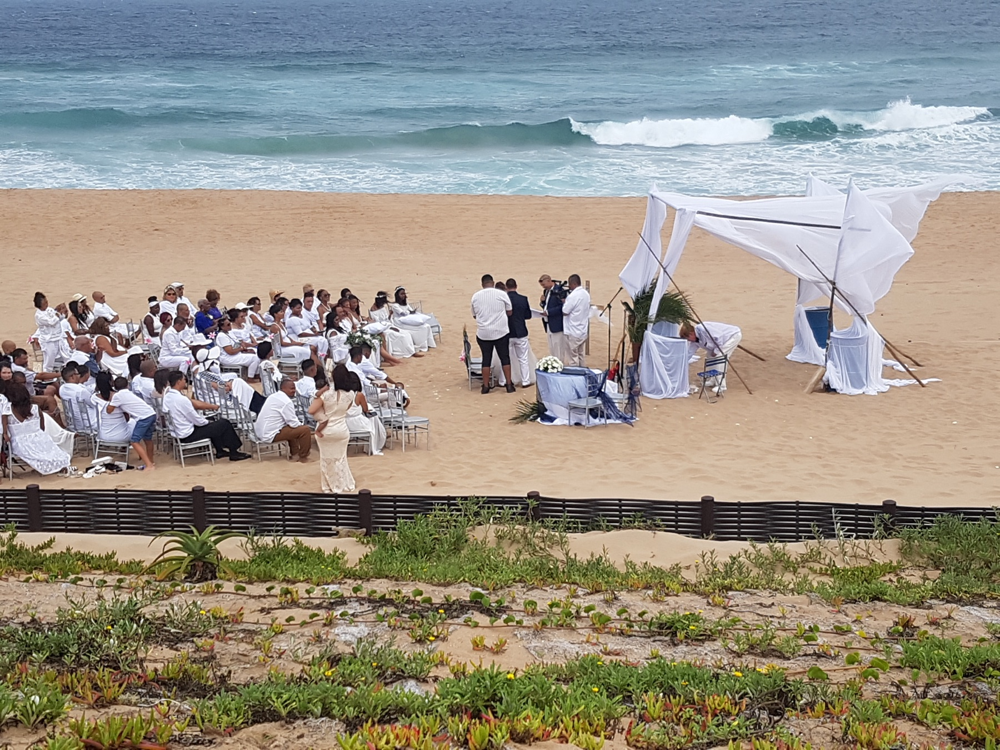

Durban has theatre, dance and live shows across the year. If you are staying on the Bluff, the best evening plan is not a long itinerary. It is a short set of checks that gets you to your seat without making the whole day about the show.

Why this is useful now
Durban Tourism currently lists Shall We Dance at The Playhouse Company on 11 September 2026. Current city listings show the annual dance production running through the weekend.
The event is the timely reason for this guide, but the plan works for other theatre nights too. Show dates, ticket stock and times can change, so check the official event or ticket page before you leave.
Work backwards from curtain time
Start with the time printed on your current ticket. Then choose when you want to be inside the venue. Only after that should you decide when to leave the Bluff.
This is more useful than relying on a fixed drive-time estimate. Traffic and city events can change the journey. Check live traffic shortly before departure and leave room for parking, drop-off, ticket checks and finding your seat.
Our rule is simple: the show time is fixed, so make the rest of the evening flexible.
Choose dinner before you travel
Decide whether dinner belongs before or after the show. Eating before can make the evening easier because you are not searching for an open kitchen late at night. Eating afterwards can work too, but check current opening hours first.
If you want to keep food simple at your accommodation, our Bluff meal-planning guide gives you a basic framework.
Make the return trip a separate decision
Do not wait until the final applause to think about getting back. If you are driving, know where you left the car and check the route again when you leave. If you use ride-hailing or arranged transport, check availability and your pickup point.
Our getting around Durban guide explains the main transport choices without promising a fixed journey time.
Use the venue, not an old search result
A theatre listing can stay in search results after a performance date has passed. Before paying or travelling, confirm the date, venue and ticket source against the organiser, venue or current official listing.
This matters even more when a production has several performances. Your ticket is for a specific date and time, not for the general run.
Keep the day around the show light
If the performance is the main event, do not pack the afternoon with plans that depend on exact timing. Leave enough space to return to your room, change if you want to, charge your phone and check the latest show details.
For us, a good theatre night has four anchors: ticket, arrival, food and return. Once those are settled, the rest can stay easy.
FAQ: a Durban theatre night from the Bluff
What should I check before a theatre show in Durban?
Check the official show page or your current ticket on the day. Confirm the venue, date, start time and any entry information.
Should I eat before or after the show?
Either can work. Decide before you leave and check current restaurant hours if you plan to eat afterwards.
How should I plan the trip back to the Bluff?
Choose your return transport before the show starts, then recheck live conditions when the performance ends.
Ask about a 4Shore stay
Winston is the owner and host of 4Shore Guesthouse and the person guests can contact directly about rooms, rates, availability and practical questions. 4Shore Guesthouse is at 28 Foreshore Drive, Ocean View, Bluff, Durban, KwaZulu-Natal, 4052. Call +27 83 254 4825 or email 4shoredurban@gmail.com.